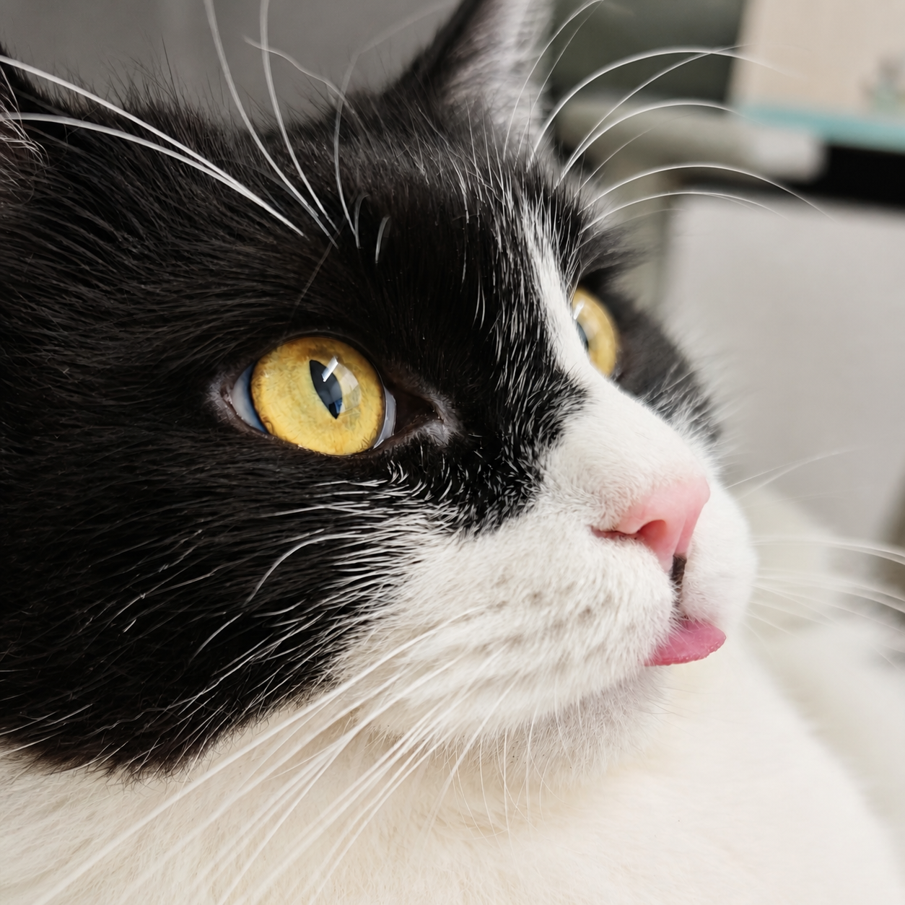

使用前请注意
本软件是独立的咖啡机控制工具，不是咖啡机制造商、销售商或官方售后服务。咖啡机存在高温、压力、电气和机械风险，请严格遵守原厂说明书。

Snowby Brew Console 雪比萃取台 · 官方说明本软件是独立的咖啡机控制工具，不是咖啡机制造商、销售商或官方售后服务。咖啡机存在高温、压力、电气和机械风险，请严格遵守原厂说明书。
Apple 版通过 Bluetooth LE 连接用户选择的咖啡机，曲线、萃取记录、设备选择和偏好保存在本机，不接入广告、行为分析或开发者云服务器。
用户在使用 Snowby Brew Console 前，请仔细阅读以下内容。继续使用本软件即表示您已理解相关硬件风险、质保影响与隐私政策。
本协议适用于 Snowby Brew Console。它是独立开发的第三方咖啡机操作工具，与咖啡机制造商、品牌方、销售商、官方 App 及官方售后不存在隶属、授权、代理、保修或售后关系。本软件仅用于连接用户选择的兼容咖啡机，并提供曲线编辑与执行、萃取启停、手动/虚拟拉杆控制、状态显示及本地萃取记录等辅助功能。
咖啡机的温度、锅炉、蒸汽、校准、固件、安全保护、维护、除垢、恢复出厂设置及其他机器级功能，应使用制造商认可的方式完成。本软件不承诺能够配置、校验或恢复上述设置。机器出现漏水、过热、压力异常、错误码、无法启动、保修或维修问题时，请立即停止使用并联系购买商家、制造商或其授权售后。
咖啡机涉及高温、压力、电力和水。用户应确认设备型号和固件兼容，在安全环境中操作，并在萃取前检查水源、电源、冲煮头、手柄、阀门及周边人员安全。请勿绕过原厂安全保护，不得在无人看管、缺水、拆机、故障或维护状态下启泵。曲线、压力、流速、时间、重量、体积、待机及拉杆指令均由用户选择并发送；界面数据仅供操作参考，不代替原厂安全装置和专业测量设备。
使用第三方控制软件可能影响制造商对设备状态的判断，并可能导致官方质保、保修或售后支持受到限制；使用前请自行向销售商或制造商确认。在法律允许的范围内，因机器固有缺陷、用户设置或误操作、连接中断、设备或固件不兼容、供电/供水异常、未经授权的改装维修、违反原厂说明或将本软件用于非预期用途造成的机器损坏、人身伤害、停机、饮品损失或其他损失，由用户自行承担；开发者不承担维修、换机、质保或售后费用。本条款不排除或限制依据适用法律不得排除、限制的责任。
本软件仅使用 Bluetooth LE 连接用户选择的咖啡机、发送控制指令并读取机器状态；Apple 版不使用 USB 串口。蓝牙扫描时，系统会提供附近设备的名称、连接标识、广播服务和信号强度；未被选择的结果仅用于当次列表，不用于定位或建立用户画像。曲线、萃取记录、蓝牙设备选择和偏好保存在本机，不接入广告、行为分析或开发者云服务器。仅在用户主动点按“从剪贴板导入曲线”时，本软件读取当次剪贴板文本以解析曲线，不持续监听、不保存或上传其内容。
本软件不读取 GPS、基站或 Wi-Fi 定位，不根据蓝牙扫描推断物理位置，也不记录、保存、上传、出售或共享地理位置信息。导入曲线时，本软件仅读取用户通过系统照片或文件选择器明确选择的 JPG 或备份文件，不遍历相册、不读取未选择的照片、不提取照片拍摄地点，也不上传文件。分享曲线 JPG 或备份文件后，接收应用、云盘、相册或通信软件将依据其自身隐私规则处理该文件；部分平台压缩图片时可能移除内嵌曲线数据。
用户可在本软件内删除曲线和萃取记录、忘记已选择的蓝牙设备，也可通过系统设置清除应用数据或卸载本软件。咖啡机涉及高温和压力，本软件不面向缺乏相应操作能力的未成年人；未成年人应在监护人与具备安全操作能力的成年人监督下使用。功能、权限或数据处理方式发生实质变化时，本协议可能更新，并在必要时再次征求同意。本协议为产品使用与隐私说明，不替代咖啡机原厂说明书、保修条款或适用法律规定。
CONTACT / 02
如果您有协议、隐私、兼容性或使用方面的问题，欢迎通过以下方式联系。